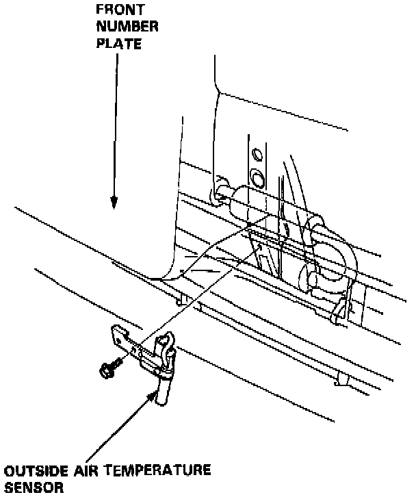

Ambient Temperature Sensor / Switch HVAC: Service and Repair

REPLACEMENT
Remove the screw, disconnect the wire harness and then remove the outside temperature sensor. Be careful not to damage the front grille and front bumper.
